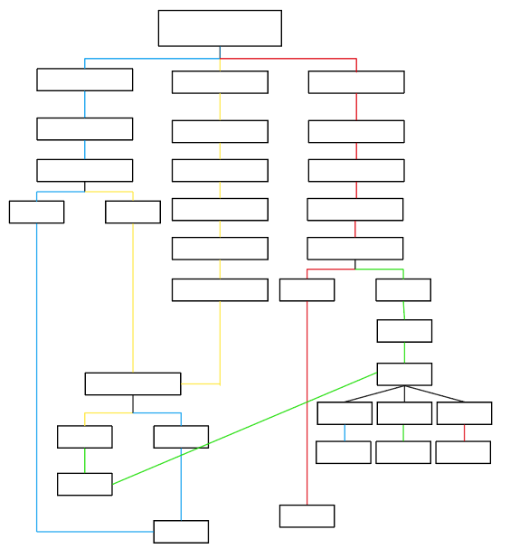

The story takes place in a strange, empty environment that feels both familiar and unsettling. The user navigates through a series of locations such as hallways and rooms, making choices that affect the path they take. As the user progresses, the environment subtly changes, creating a sense that something is wrong. Some choices lead to escape, while others result in being trapped within the space. The narrative focuses on atmosphere, isolation, and the uncanny feeling of being in a place that should not exist.
